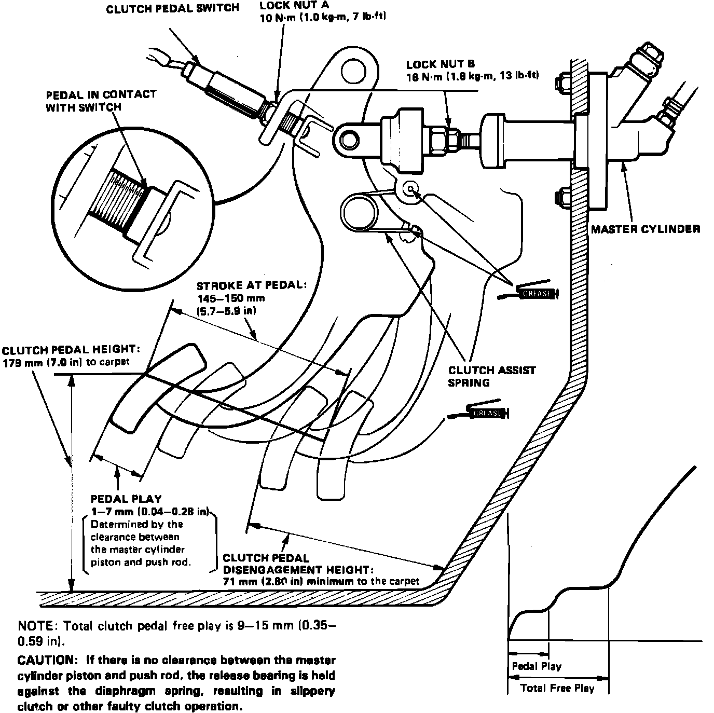

Clutch: Adjustments
Fig. 4 Clutch Pedal Adjustments:

1. Disable coded theft protection system as described under MAINTENANCE PROCEDURES/CODED THEFT PROTECTION DISARMING.
2. Disarm airbag system as described under MAINTENANCE PROCEDURES/AIRBAG SYSTEM DISARMING.
3. Measure clutch pedal disengagement height, pedal height, freeplay and stroke at pedal.
4. Loosen locknut A, and turn pedal switch.
5. Loosen locknut B, then rotate pushrod in or out to bring disengagement height, pedal height, freeplay and stoke at pedal within specifications, Fig. 4.
6. Tighten locknut B, then screw in pedal switch until it contacts clutch pedal.
7. Turn switch an additional 1/4-1/2 turn, then tighten locknut A.